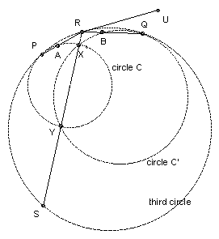
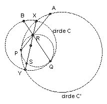

Two circles C and C' meet at X and Y. Find four points such that if a circle touches C and C' at P and Q and meets the line XY at R and S, then each of the lines PR, PS, QR, QS passes through one of the four points.
Solution
Answer: the 4 points are the points of contact of the two common tangents to C and C' (with C and C').
|  |  |
Let PR meet C again at A. Let QR meet C' again at B. We show that AB is tangent to C and C', so that A and B are fixed and independent of the position of the third circle.
Let RU be the tangent at R (as shown). Then ∠QRU = ∠QPR. But RP·RA = RX·RY (PAXY cyclic) = RB.RQ (QBXY cyclic), so RA/RB = RQ/RP and hence RAB and RQP are similar. So ∠QPR = ∠RBA. Hence ∠QRU = ∠RBA and AB is parallel to RX. But it we shrink with center P so that the third circle goes into C, then RU will go into a parallel line through A and hence into AB. But RU is tangent to the third circle, so AB must be tangent to C. Similarly, shrinking about Q, shows that AB is tangent to C'.
A similar argument shows that PS and QS pass through the two points of contact of the other common tangent of C and C'.

© John Scholes
jscholes@kalva.demon.co.uk
10 Oct 2002
Last corrected/updated 10 Oct 02